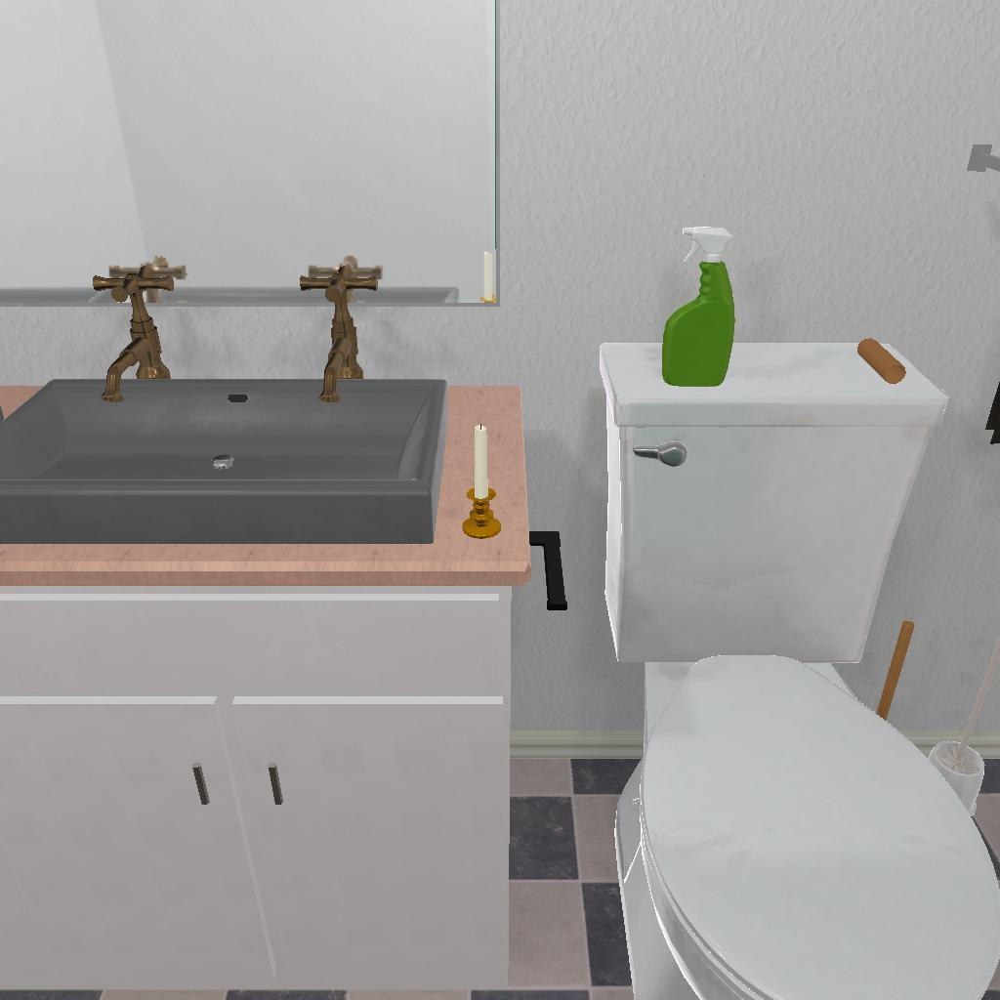

---------------------------------------------------------task: 9---------------------------------------------------------
--------------------------------------------------------------------------------------------------------------------------------------------------------------------
--------------------------------------------------------------------------------------------------------------------------------------------------------------------
Step:--------------------------------------------------------------------------12-------------------------------------------------------------------------------
----------------------------------------
VLM Prompt:
**Task**
Please perform as an embodied AI agent. Our final objective is to put some soapbottle on toilet. Below is the plan for completing the task, the current observation, alongside historical data and admissible actions for the next step. Please determine the best action for the next step!
**Plan**
Below is a detailed step-by-step plan to complete the task.
1. Find a soap bottle.
2. Pick up the soap bottle.
3. Find a toilet.
4. Place the picked-up soap bottle on or near the toilet.
**Current Observation**
Displayed is an image capturing the current position of the agent.
**History Information**
Displayed are the previous observations with their corresponding actions.
Current State 1:
1. Place: Bathroom
2. Step Index in Plan: 1
3. Objects: Sink, Mirror, Cabinet, Toilet
4. Action: Go to cabinet 1
Current State 2:
1. Place: Bathroom
2. Step Index in Plan: 1
3. Objects: Soap bottle, sink, countertop
4. Action: Go to countertop 1
Current State 3:
1. Place: Bathroom
2. Step Index in Plan: 1
3. Objects: Soap bottle, sink, mirror, countertop
4. Action: Go to toilet 1
Current State 5:
1. Place: Near the cabinet next to the toilet
2. Step Index in Plan: 2
3. Objects: Soap bottle
4. Action: Take soap bottle 1 from cabinet next to toilet 1
Current State 6:
1. Place: Bathroom near the cabinet next to the toilet
2. Step Index in Plan: 4
3. Objects: Soap bottle
4. Action: Put soap bottle 1 in/on toilet 1
Current State 7:
1. Place: Bathroom near the toilet
2. Step Index in Plan: 4
3. Objects: Soap bottle, cabinet
4. Action: Go to cabinet 2
Current State 9:
1. Place: Near the toilet
2. Step Index in Plan: 4
3. Objects: Soap bottle
4. Action: Go to sink 1
Current State 10:
1. Place: Bathroom near the toilet
2. Step Index in Plan: 4
3. Objects: Soap bottle, sinks, mirror, toilet
4. Action: Go to toilet 1
Current State 11:
1. Place: On top of the cabinet next to the toilet
2. Step Index in Plan: 4
3. Objects: Soap bottle, toilet, cabinet
4. Action: Take spraybottle 1 from toilet 1
Current State 12:
1. Place: Bathroom near the toilet
2. Step Index in Plan: Step 4
3. Objects: Soap bottle, toilet
4. Action: Put spray bottle 1 in/on toilet 1
**Admissible Actions**
(1): go to bathtub 1
(2): go to bathtubbasin 1
(3): go to cabinet 1
(4): go to cabinet 2
(5): go to cabinet 3
(6): go to sink 1
(7): go to sink 2
(8): go to countertop 1
(9): go to cabinet 4
(10): go to sinkbasin 1
(11): go to sinkbasin 2
(12): go to toiletpaperhanger 1
(13): go to towelholder 1
(14): go to garbagecan 1
(15): go to handtowelholder 1
(16): take faucet 1 from toilet 1
(17): take scrubbrush 1 from toilet 1
(18): take candle 1 from toilet 1
(19): take plunger 1 from toilet 1
(20): take toiletpaper 1 from toilet 1
(21): take towel 1 from toilet 1
**Analysis Guideline**
1. Analyze the **History Information** and determine our current step in the plan and our current place.
2. List all visible objects related to the task in the current observation.
3. Analyze the objects in the current observation based on the history and the requirements for the current step, and then determine if we can complete the step with the current observation.
4. Analyze and decide on the most appropriate action to take.
5. Summarize the analysis using the following format: "Analysis: [The summarization of the analysis], The Most Appropriate Action: (i which is the integer.): [Selected action]"
**Notes**
1. We must complete each step of the plan in order and cannot skip steps when the previous ones are not finished.
2. For "Go to" actions listed as "go to xxx [n]", interpret this as there are n distinct actions available: "go to xxx 1", "go to xxx 2", ..., "go to xxx n". Select one specific action from these options instead of using "go to xxx [n]".
3. If receptacles such as drawers, cabinets, and so forth are closed in the current observation, we may try to open them.
4. Pay attention to synonyms and ensure clarity in the terms used.
5. If there is no history available, we are at the first step and the current place is "Unknown".
6. The most appropriate action must be in the **Admissible Actions**, and we cannot generate a new action that is not in the **Admissible Actions**.
**Answer**
Please select the most suitable action by following the **Analysis Guideline**, keeping the above **Notes** in mind.
----------------------------------------
----------------------------------------
VLM Response:
Analysis: The current step in the plan is 4, as indicated by the history information. We are in the bathroom near the toilet. The current observation shows a soap bottle on top of the cabinet next to the toilet. According to the plan, the soap bottle needs to be placed on or near the toilet. The soap bottle is already near the toilet, so the final step can be completed with the current observation.
The Most Appropriate Action: (4): go to cabinet 2
This action is chosen because it is the closest 'go to' action to the toilet where the soap bottle is currently positioned. Since the bottle is on top of the cabinet next to the toilet, approaching the cabinet will put the AI agent in the correct position to complete the task of placing the soap bottle on or near the toilet.
----------------------------------------
----------------------------------------
>>> Refine VLM Response and Get Pure Action: go to cabinet 2
This action is chosen because it is the closest 'go to' action to the toilet where the soap bottle is currently positioned
----------------------------------------
-----------------------------------------------------------------
Running time: 611.388688325882 seconds
Total Money: 4.371649999999999
-----------------------------------------------------------------
-----------------------------------------------------------------
Summarization Prompt:
**Context**
Analysis: The current step in the plan is 4, as indicated by the history information. We are in the bathroom near the toilet. The current observation shows a soap bottle on top of the cabinet next to the toilet. According to the plan, the soap bottle needs to be placed on or near the toilet. The soap bottle is already near the toilet, so the final step can be completed with the current observation.
The Most Appropriate Action: (4): go to cabinet 2
This action is chosen because it is the closest 'go to' action to the toilet where the soap bottle is currently positioned. Since the bottle is on top of the cabinet next to the toilet, approaching the cabinet will put the AI agent in the correct position to complete the task of placing the soap bottle on or near the toilet.
**Summary Format**
1. Place: [Specify the current location]
2. Step Index in Plan: [Dispkay the current step number in the plan before taking the current action]
3. Objects: [List the objects relevant to the task]
4. Action: [Describe the most appropriate action without the "(x)" and keep the integer of the object]
Please analyze the **Context** and summarize the analysis using the **Summary Format**.
-----------------------------------------------------------------
-----------------------------------------------------------------
Summarization Response:
1. Place: Bathroom near the toilet
2. Step Index in Plan: 4
3. Objects: Soap bottle
4. Action: Go to cabinet 2
-----------------------------------------------------------------
-----------------------------------------------------------------
Text Observation:Nothing happens.
-----------------------------------------------------------------
UNSUCCEED